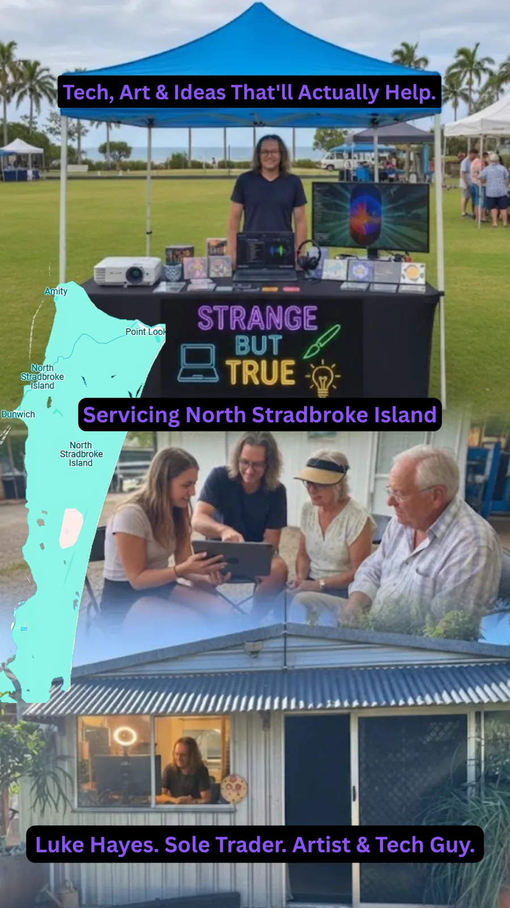

Not hard things, strange things.
Pragmatic A.I. research, community stewardship, and electronic arts from Minjerribah.
A Sincere Invitation
Strange but True is an independent organisation focused on joyful responsible abundance. Operating from Amity Point on North Stradbroke Island, I provide technical and creative support that prioritises people over profit.
Whether it's helping an elder navigate digital systems or facilitating a large-scale community cinema event, the goal is simple: to be a grounded, helpful presence in an increasingly complex world.

The Service Catalogue
Digital Literacy
Patient, plain-speaking support for mobile devices, scam prevention, and basic digital troubleshooting.
A.I. Strategy
Pragmatic training on how to use A.I. tools to reduce administrative burden and spark creative projects.
A/V & Events
Professional projection, audio setups, and outdoor cinema facilitation for community groups and clubs.
Digital Garden & Creative Archives
Electronic Arts
Original music albums and visual works produced under the name i C. infinity.
Research Papers
Non-fiction explorations of systems architecture, local resilience, and A.I. ethics.
The Sandworm Project
Documentation on sustainable local infrastructure and geopolymer construction methods.
Connect with the Project
Located at Amity Point, North Stradbroke Island (Minjerribah).
Send an Enquiry